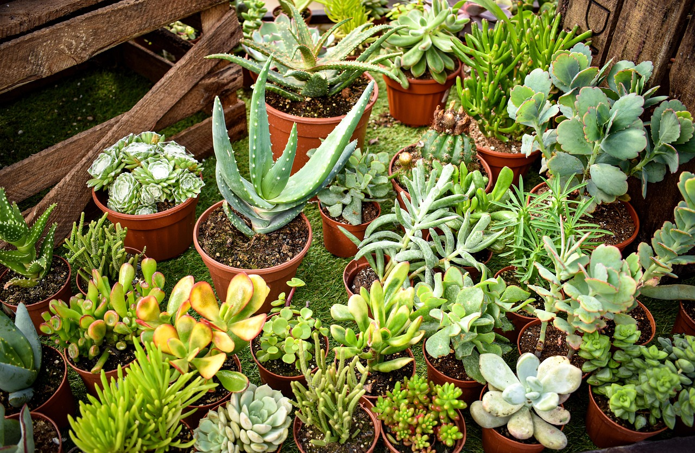
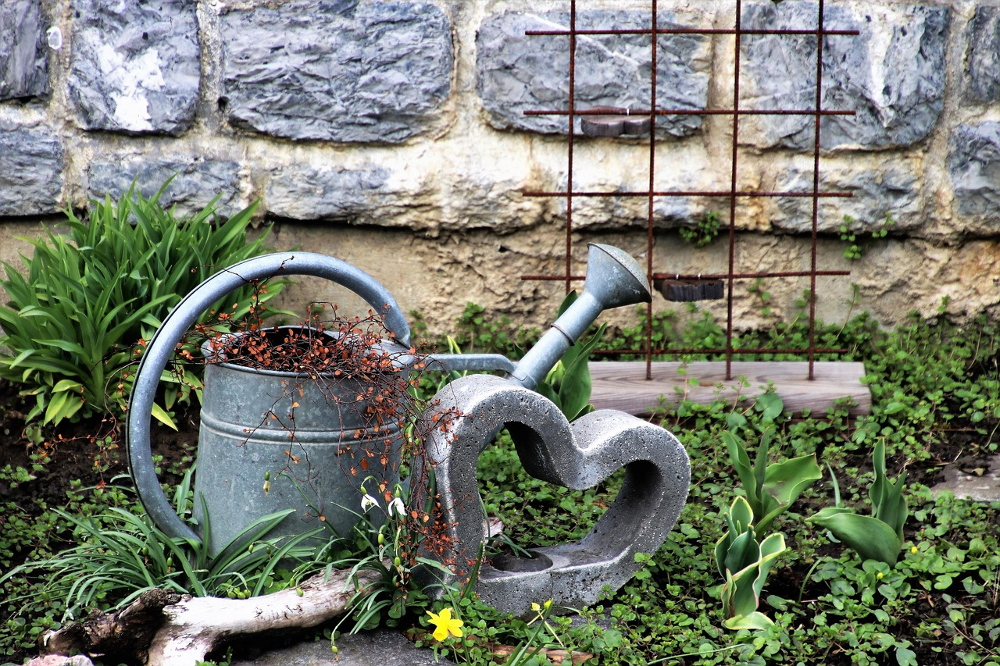
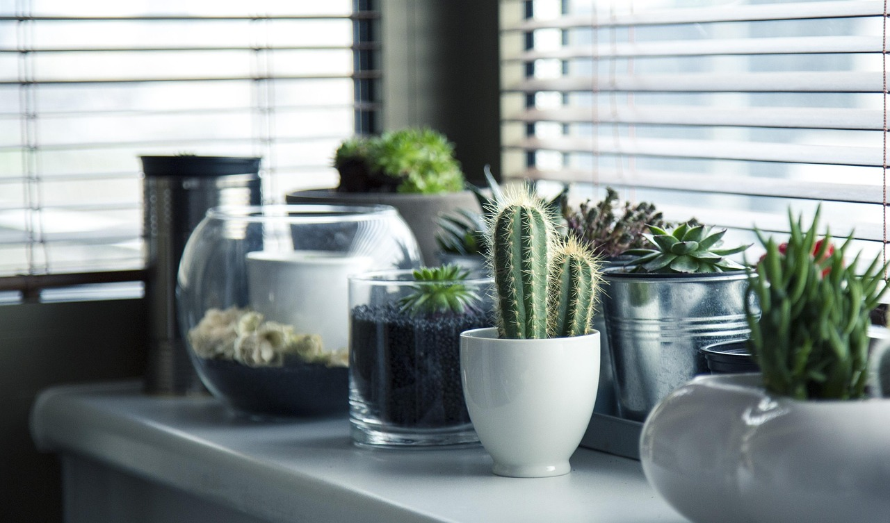

Yeni Başlayanlar İçin Ev Ormanı Oluşturma Rehberi
Evinizi bir vahaya çevirmek istiyor ama nereden başlayacağınızı bilmiyorsanız, bu ipuçları tam size göre...
Devamını Oku →Doğayı evinize taşımanın yolları, dekorasyon fikirleri ve daha fazlası.

Evinizi bir vahaya çevirmek istiyor ama nereden başlayacağınızı bilmiyorsanız, bu ipuçları tam size göre...
Devamını Oku →
Yaprak sararması her bitki severin korkulu rüyasıdır. Fazla sulamadan ışık eksikliğine kadar tüm nedenleri inceledik.
Devamını Oku →
Bitkiniz kadar saksısı da önemlidir. 2026'nın en popüler minimalist saksı trendlerini keşfedin.
Devamını Oku →